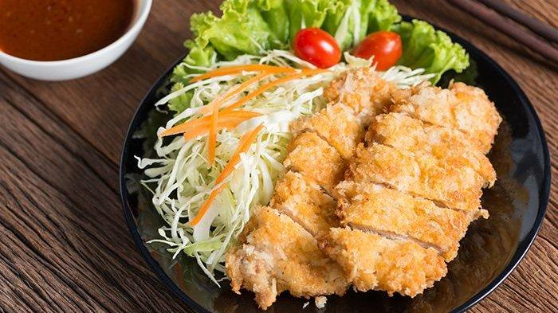

Chicken Katsu

Description
Katsu is a Japanese dish of crispy fried cutlets coated with Panko bread crumbs.
Popular varieties are chicken katsu (like this recipe) and tonkatsu (which is made with pork).
Ingredients
- Skinless and Boneless Chicken Breast
- Salt and Pepper
- All purpose Flour
- Egg
- Panko
- Oil
Steps
- Season the chicken, then dredge in flour.
- Coat each breast in egg, then press into the Panko.
- Fry the chicken katsu until golden brown.